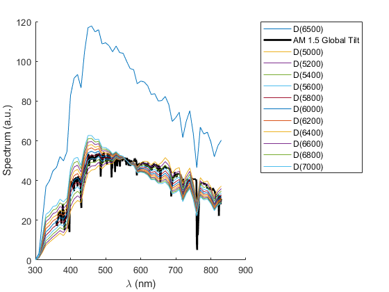

CIEDE2000_XYZ
Navigate to: Home | Alphabetic list | Grouped list | Source code: CIEDE2000_XYZ.m
Compute the CIEDE2000 color difference between two XYZ stimuli.
Contents
Syntax
dE = CIEDE2000_XYZ( XYZ1, XYZ2, XYZn )
Input Arguments
- XYZ1: A struct with scalar real fields X, Y and Z, the first stimulus
- XYZ2: A struct with scalar real fields X, Y and Z, the second stimulus
- XYZn: A struct with scalar real fields X, Y and Z, the tristimulus values of the "reference white": the brightest diffuse white in the scene from which XYZ1 aand XYZ2 are taken
Output Arguments
- dE: scalar double. The color difference. dE == 1 is assumed to be just noticeable.
Algorithm
Computes CIELAB Lab values for XYZ1 and XYZ2 using CIE_Lab. (This is the step for which the reference white is needed). Then forwards to CIEDE2000_Lab to do the actual work.
See also
Usage Example
function ExampleCIEDE2000_XYZ() name = ' Air Mass 1.5 Solar Spectrum'; fprintf('CIEDE2000 dE of CIE D Illuminants vs. %s\n',name); d6500 = CIE_Illuminant_D(6500); % our reference white d6500.XYZ = CIE1931_XYZ(d6500); figure(); hold on; plot(d6500.lam, d6500.val); TT = 5000:200:7000; am1_5 = ResampleSpectrum(SolarSpectrum('AM15_GlobalTilt'), 360:830); am1_5.val = am1_5.val * 33; am1_5.XYZ = CIE1931_XYZ(am1_5); plot(am1_5.lam, am1_5.val,'k','LineWidth',2); leg = {'D(6500)', 'AM 1.5 Global Tilt'}; for T = TT ds = CIE_Illuminant_D(T); ds.val = ds.val * 0.5; ds.XYZ = CIE1931_XYZ(ds); plot(ds.lam, ds.val); dE = CIEDE2000_XYZ(ds.XYZ, am1_5.XYZ, d6500.XYZ); fprintf('T = %g K, dE = %g\n', T, dE); leg{end+1} = sprintf('D(%g)',T); end xlabel('\lambda (nm)'); ylabel('Spectrum (a.u.)'); legend(leg,'Location','northeastoutside'); end
T = 5000 K, dE = 5.15571 T = 5200 K, dE = 4.046 T = 5400 K, dE = 3.19512 T = 5600 K, dE = 2.84076 T = 5800 K, dE = 3.15144 T = 6000 K, dE = 3.97183 T = 6200 K, dE = 5.05809 T = 6400 K, dE = 6.27216 T = 6600 K, dE = 7.56989 T = 6800 K, dE = 8.79269 T = 7000 K, dE = 9.89